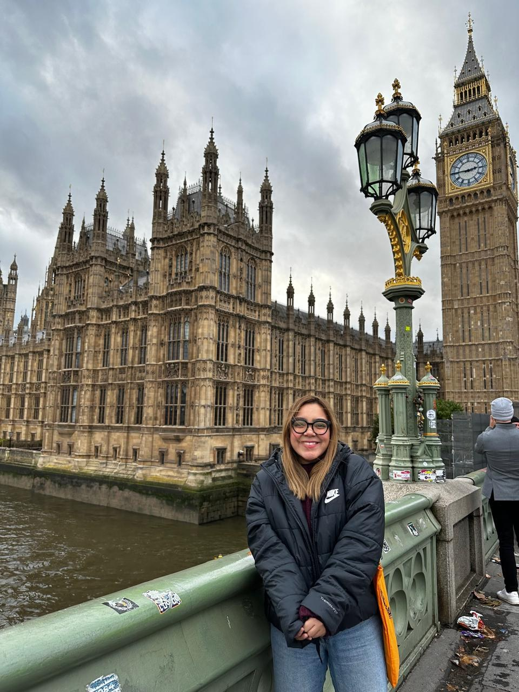
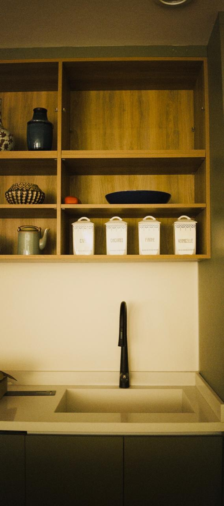

Antonia López Gallegos · Arquitecta
Quién soy
Soy arquitecta enfocada en el diseño de interiores. Me apasiona trabajar de la mano con los clientes para convertir sus ideas en espacios que se sientan auténticos y funcionales, con un especial interés en el diseño de cocinas como el corazón del hogar.
Me enfoco en la mirada de obra: supervisión, coordinación de personal y control de calidad, acompañando cada proyecto desde la planeación hasta la entrega en sitio.


Qué hago
Diseño, detalle y experiencia
Trabajo en la creación de espacios donde la funcionalidad y la estética conviven. Me apasiona transformar ideas en proyectos que priorizan el diseño, el detalle y la experiencia del usuario.
Experiencia en AutoCAD, levantamientos, revisión de instalaciones, especificaciones de materiales y acabados, y gestión de proveedores en obra.
Ver proyectosTrayectoria
-
2026 — PresenteDOMA Project & Site Coordinator
-
2024 — 2025GRETA, Francia Intercambio académico internacional
-
2023 — 20244.13 Project & Site Coordinator — cocinas y closets
-
2021Hagamos Muebles · Servicios de Agua Potable Site Resident y Architect's Assistant